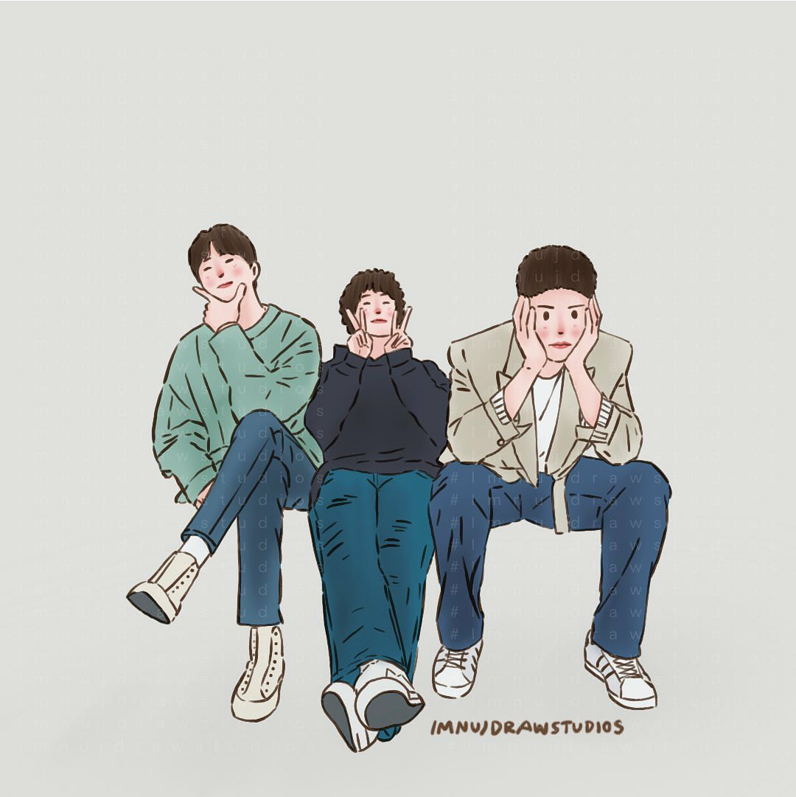

You know, Bad mental health is a disability...
This is an application which is used to help people know about their mental well-being and know how they are with the help of a game. We feel that unstable mental state is also a kind of bad health causing disability in day-today life.
What are we as a young generation going through?
We are all young people, living to learn and learning to live.
For me, everyday is a new lesson. We are hustling daily and trying to win in the cutthroat competition where almost everyone is working hard and knowing things. Most of us are so confident and self-dependent that we have almost become a narcissist. The youth of today has been widely outclassed; this is an age where they are too young to be pampered, and they are not old enough to take big responsibilities on their own shoulders. Most of us keep battling with this problem for many years due to lack of guidance and support sometimes. Also we can see that most of us are stressed and frustated these days, unlike the youth 20-30 years back. We need X number of years of experience, a good degree, ample of knowledge and really good soft-skills to enter the job market in the first place, and this is the basic requirement.
Also peer pressure and societal double standards just strangle the innocent soul and moulds the mentality of young generation into a completely bad shape. No doubt today's youth is more outgoing, more extravagant in their desires and less into their studies; they are stubborn, want to attain success very fast and have a luxurious lifestyle with least efforts. Perpetual fight between heart and mind on s-called love issues which have dramatically been on rise since the past few years but end mostly in the destruction of lives either by suicide or by eternal misery which renders them mentally unfit. The depression overpowers them and very few are able to cope up with it as another aspect of the ups and downs of life.
I believe we must learn to wait a little, give time to take care of our health, do more of our favorite activites and spend time with our family. We must try to accept certain things the way they are and start leaning from out failures.
This as a whole is badly affecting our mental health.
Click this link to check how your mental health is in a minute and get some idea about how well you actually are. Check your Mental Health